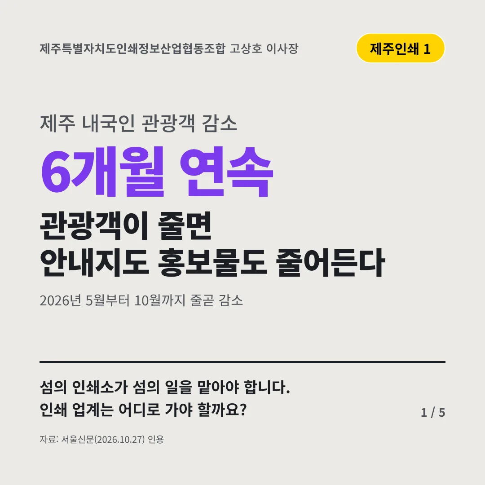
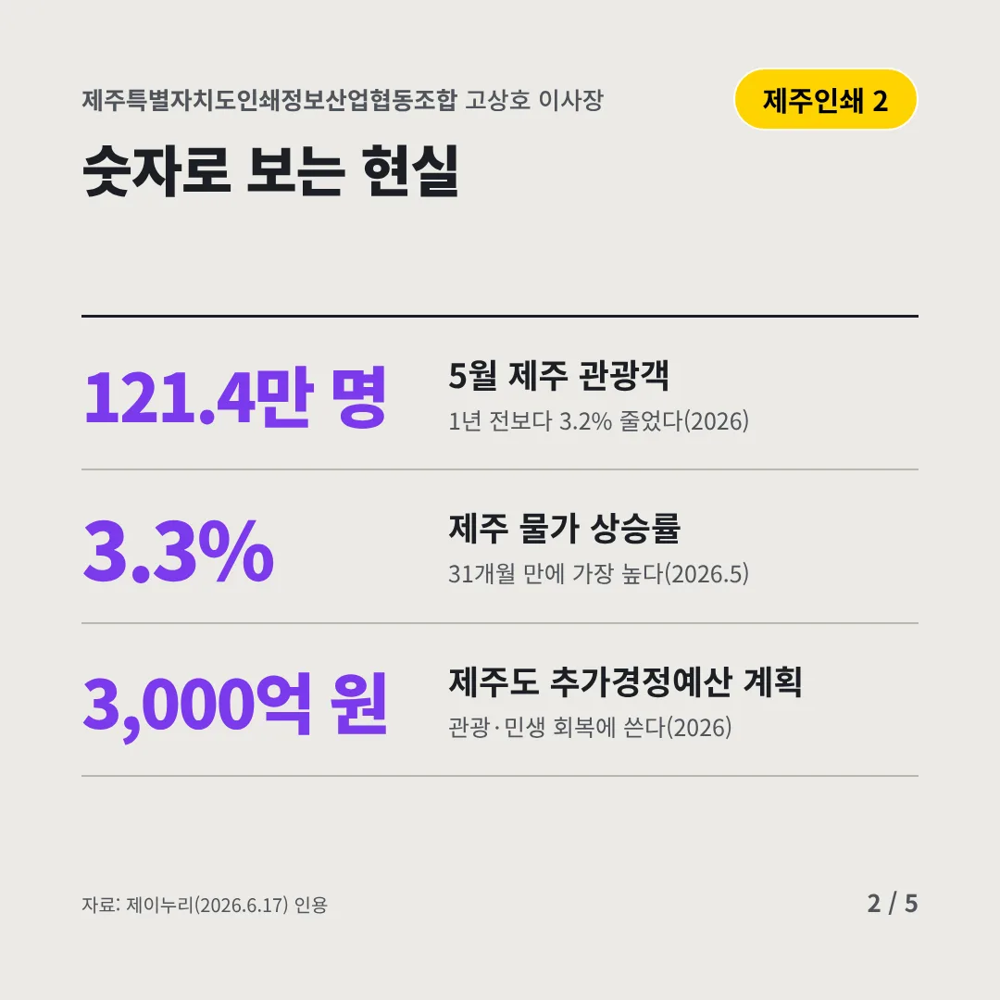
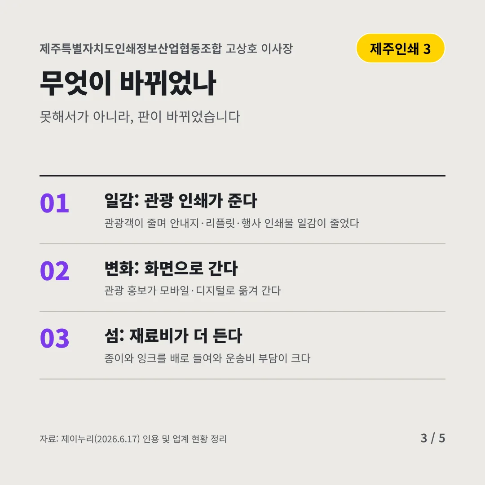
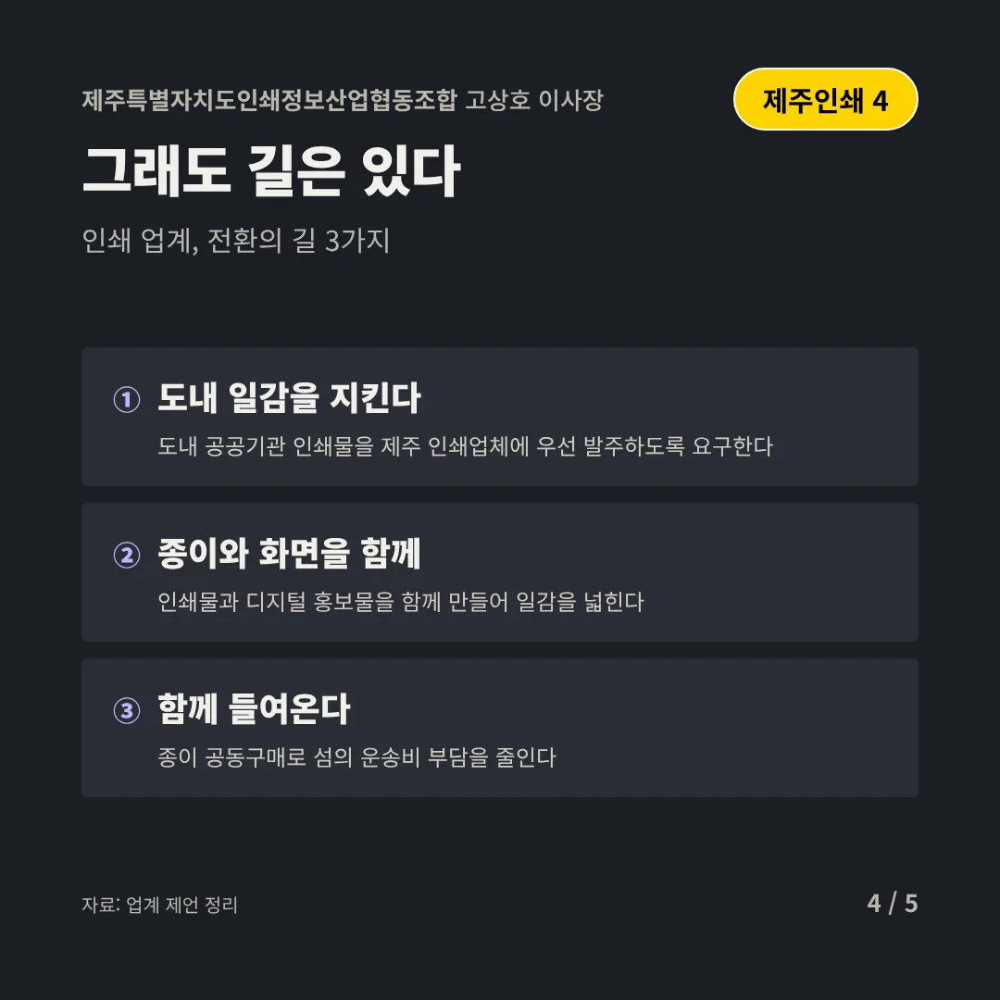
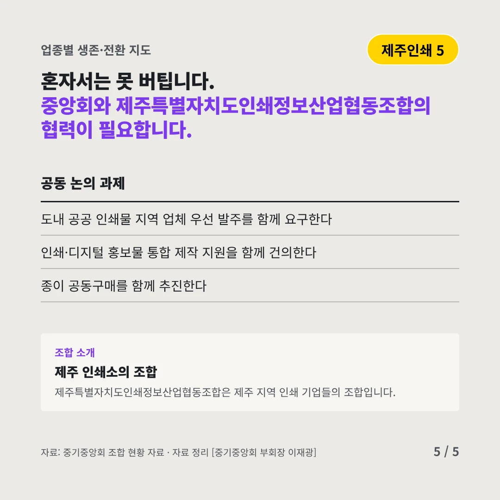
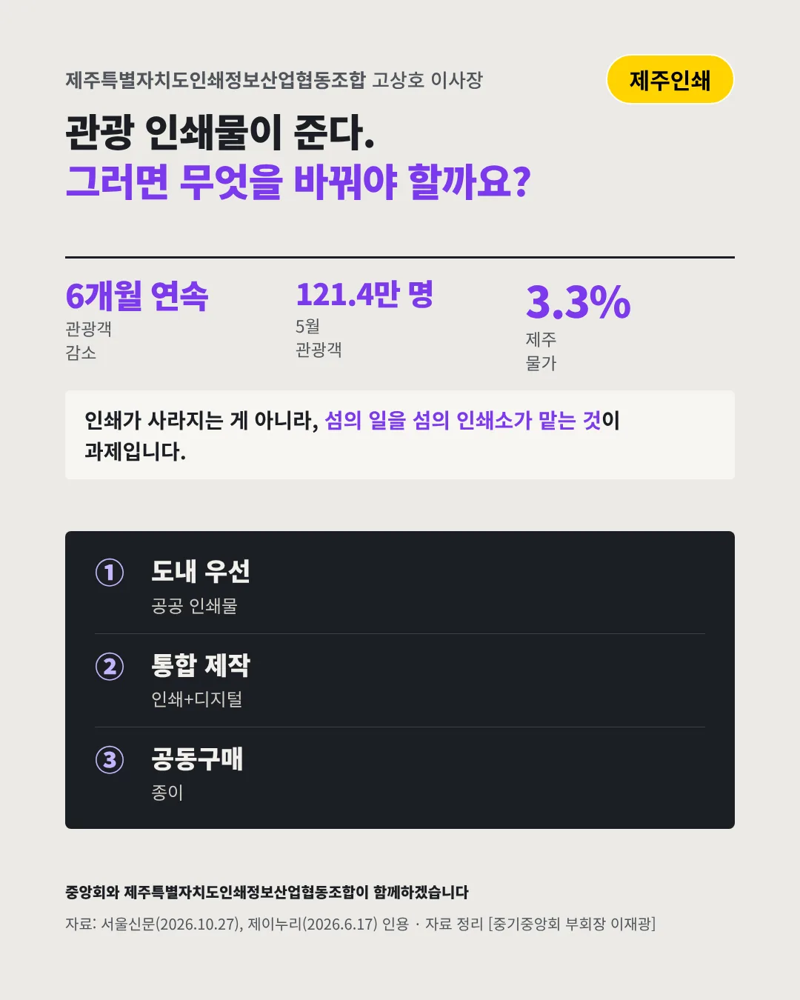

제주특별자치도인쇄정보산업협동조합고상호 이사장
관광객이 줄면 안내지도 홍보물도 줄어든다
6개월 연속 제주 내국인 관광객 감소






섬의 인쇄소가 섬의 일을 맡아야 합니다. 인쇄 업계는 어디로 가야 할까요?
숫자로 보는 현실
- 121.4만 명5월 제주 관광객1년 전보다 3.2% 줄었다(2026)
- 3.3%제주 물가 상승률31개월 만에 가장 높다(2026.5)
- 3,000억 원제주도 추가경정예산 계획관광·민생 회복에 쓴다(2026)
무엇이 바뀌었나
- 일감: 관광 인쇄가 준다관광객이 줄며 안내지·리플릿·행사 인쇄물 일감이 줄었다
- 변화: 화면으로 간다관광 홍보가 모바일·디지털로 옮겨 간다
- 섬: 재료비가 더 든다종이와 잉크를 배로 들여와 운송비 부담이 크다
그래도 길은 있다
- 도내 일감을 지킨다도내 공공기관 인쇄물을 제주 인쇄업체에 우선 발주하도록 요구한다
- 종이와 화면을 함께인쇄물과 디지털 홍보물을 함께 만들어 일감을 넓힌다
- 함께 들여온다종이 공동구매로 섬의 운송비 부담을 줄인다
한 장 요약

조합 소개
제주특별자치도인쇄정보산업협동조합은 제주 지역 인쇄 기업들의 조합입니다.
자료: 서울신문(2026.10.27), 제이누리(2026.6.17)